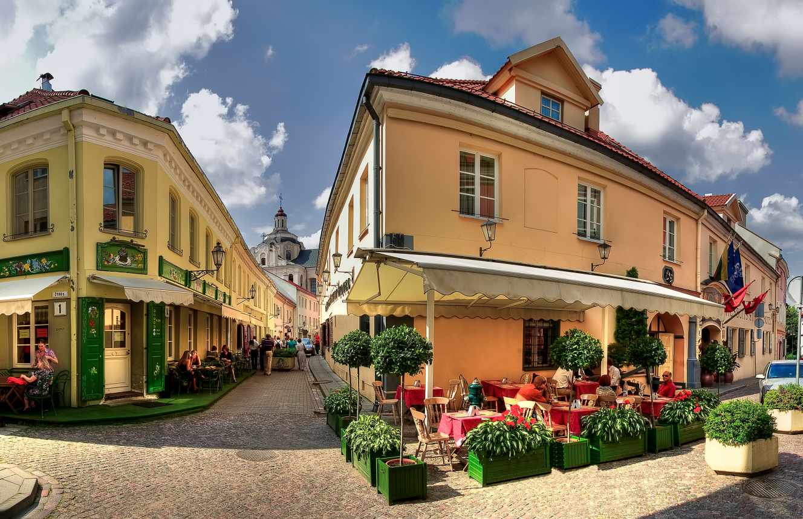
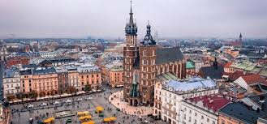

MONSCOU, RUSSIE

De la place Rouge de Moscou à Saint-Pétersbourg et ses somptueux palais, vivez un voyage en Russie enchanteur, dans un défilé de trésors d’histoire et d’architecture. Bienvenue au royaume de la grandeur et des extrêmes !
Prenez le temps de découvrir Moscou et Saint-Pétersbourg, les deux villes-phares du pays. D’un côté Moscou, fascinante avec ses clochers colorés, son Kremlin, sa galerie Tretiakiov ; de l’autre, Saint-Pétersbourg, capitale impériale par excellence avec ses musées et ses palais. Durant votre voyage en Russie, laissez place à l’émerveillement à travers des expériences comme :
Parcourir l’Anneau d’or et ses cités princières
Admirer les stucs et les lustres du métro de Moscou, un vrai palais souterrain !
Découvrir l’héritage fastueux des tsars à Saint-Pétersbourg
Assister à un spectacle féérique au Bolchoï à Moscou
Parcourir des paysages grandioses à bord du Transsibérien
En embarquant à bord du Transsibérien, c’est toute la Russie sibérienne que vous découvrirez, en passant par la Mongolie et jusqu’à la Chine. Laissez-vous éblouir par les vastes étendues de steppes et de la taïga de la Sibérie et vivez un voyage en train mythique en vous arrêtant à Oulan Bator, la capitale mongole, et à Pékin. Des villes lumière russes à la taïga sibérienne, de grands moments vous attendent.
VIENNE, AUTRICHE
Créative, festive, verte, sûre, tolérante… La capitale autrichienne, en tête des palmarès internationaux sur la qualité de vie, collectionne les louanges. Immersion dans une cité (presque) idéale.Vienne a longtemps gardé ses distances avec son fleuve, qui s’étalait jadis en un dédale de bras capricieux. Il fallut deux grandes vagues de chantiers, aux XIXe et XXe siècles, pour dompter son flot imprévisible. Et le transformer, lui aussi, en atout naturel. Aujourd’hui, la ville aligne quatre cours d’eau : le canal du Danube (un ancien bras canalisé), le lit principal, le Nouveau Danube (un bras de dérivation), et enfin le Vieux Danube. Une bonne part de leurs berges sont dédiées aux sports et à la détente, surtout à la belle saison. « Après le travail, on va se rafraîchir, raconte François Bonnay. Sur le Nouveau Danube, les zones de baignade s’étendent sur des kilomètres et il y a même des espaces de barbecue, que l’on peut réserver pour pas grand-chose [dix euros]. »
KRAKOV, POLOGNE
Créative, festive, verte, sûre, tolérante… La capitale autrichienne, en tête des palmarès internationaux sur la qualité de vie, collectionne les louanges. Immersion dans une cité (presque) idéale.Vienne a longtemps gardé ses distances avec son fleuve, qui s’étalait jadis en un dédale de bras capricieux. Il fallut deux grandes vagues de chantiers, aux XIXe et XXe siècles, pour dompter son flot imprévisible. Et le transformer, lui aussi, en atout naturel. Aujourd’hui, la ville aligne quatre cours d’eau : le canal du Danube (un ancien bras canalisé), le lit principal, le Nouveau Danube (un bras de dérivation), et enfin le Vieux Danube. Une bonne part de leurs berges sont dédiées aux sports et à la détente, surtout à la belle saison. « Après le travail, on va se rafraîchir, raconte François Bonnay. Sur le Nouveau Danube, les zones de baignade s’étendent sur des kilomètres et il y a même des espaces de barbecue, que l’on peut réserver pour pas grand-chose [dix euros]. »